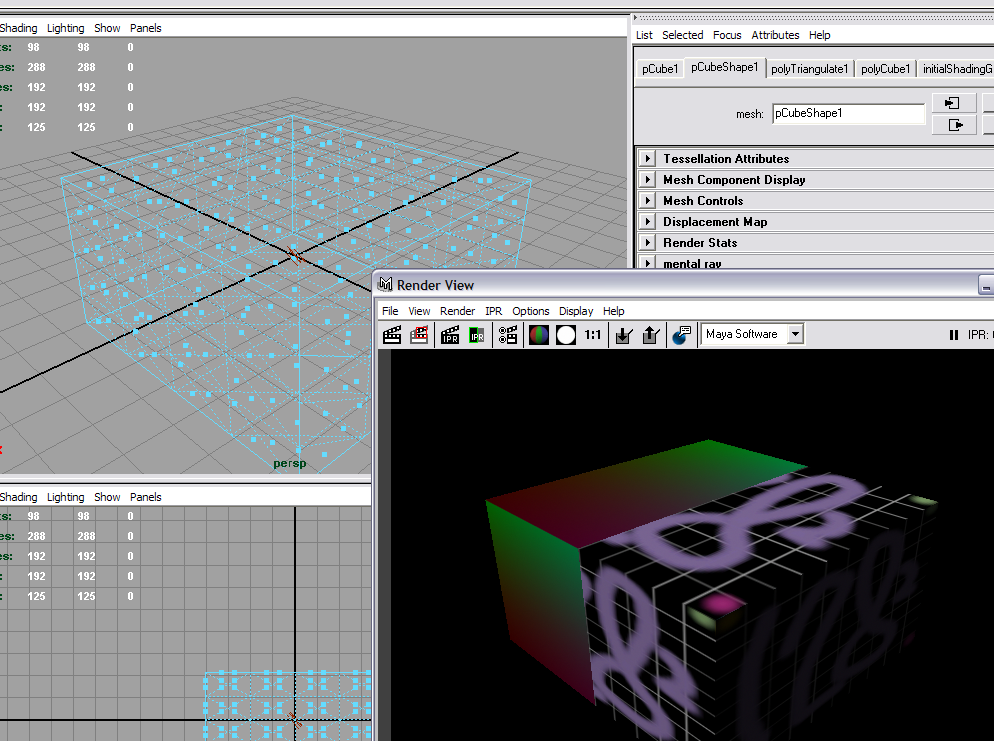
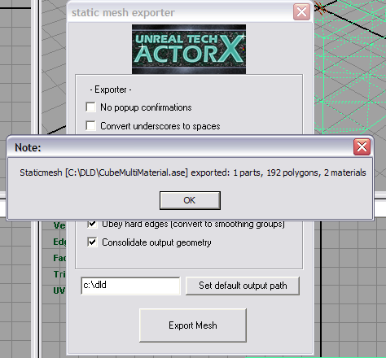

UDN
Search public documentation:
ExportingMeshesTutorialJP
English Translation
中国翻译
한국어
Interested in the Unreal Engine?
Visit the Unreal Technology site.
Looking for jobs and company info?
Check out the Epic games site.
Questions about support via UDN?
Contact the UDN Staff
中国翻译
한국어
Interested in the Unreal Engine?
Visit the Unreal Technology site.
Looking for jobs and company info?
Check out the Epic games site.
Questions about support via UDN?
Contact the UDN Staff
メッシュのエクスポートチュートリアル
ドキュメントの概要: ActorX エクスポートプラグインツールを使って 3D モデリングプログラムからメッシュをエクスポートし、Unreal Engine にインポートして複数のマテリアルを適用する手順を説明した簡単な手引き。 ドキュメントの変更ログ: Erik de Neve? により作成。概要
このドキュメントでは、複数のマテリアル割り当てを含む静的メッシュを、3D モデリングプログラムから ActorXJP プラグインを使ってエクスポートする方法を分かりやすく説明しています。 注記: Epic 社では 3D Studio Max と Maya 間で切り替えて使用することが多く、そのため Maya の Z up オプションを用い (Max のオプションに合わせるため)、エディタへのインポート時には "assume Maya coordinates" (Maya の座標を継承する) は使用しません。さらに、Max または Maya のいずれでも、キャラクターが正の X 方向を向くように、メッシュを X 軸上で 90 度回転しなければなりません。 基本的に、描画オブジェクトのエクスポートには、シンプルなアスキーエクスポートフォーマット(.ASE)を利用し、以下のオプションをセットしてください。 アウトプットオプション- Mesh Definition(メッシュ定義)
- Materials(マテリアル)
- Mesh Normals(メッシュ法線)
- Mapping Coordinates(マッピング座標)
コンテンツのエクスポート:Maya
Maya からのエクスポートに関するより技術的な情報は、 Maya からの静的メッシュのエクスポート ページに掲載されています。Maya 用の ActorX プラグインのインストール
ActorXJP ページから、ご使用の Maya のバージョンに該当するプラグインを選択します。 ファイルを解凍し、ActorXTool.MLL ファイルをプラグイン専用フォルダ (例えば...\Maya6.0\bin\plug-ins) にインストールします。Maya でのシーン設定
メッシュを作成します (ここでは単純なキューブを作成します)。すべてのポリゴンが三角分割されていることを確認します。 ロー (raw、Targa 24 ビット) フォーマットの 2 つのテクスチャを使い、Multilister に 2 つのマテリアルを作成します。
ロー (raw、Targa 24 ビット) フォーマットの 2 つのテクスチャを使い、Multilister に 2 つのマテリアルを作成します。
 マテリアル名を適切な名前に変更します。
目的のフェイスを選択し、メッシュの一部にマテリアルを割り当てます (スペースバーを押しながらフェイスを続けて選択し、Multilister でマテリアルを右クリックして [Assign to Selection] (選択項目に割り当て) を選択します)。
マテリアル名を適切な名前に変更します。
目的のフェイスを選択し、メッシュの一部にマテリアルを割り当てます (スペースバーを押しながらフェイスを続けて選択し、Multilister でマテリアルを右クリックして [Assign to Selection] (選択項目に割り当て) を選択します)。

'item' (アイテム) 選択モードに戻り、メッシュを選択します。シーンのエクスポート
コマンドライン (画面下) でaxmesh と入力し、メッシュのエクスポートダイアログを起動します。次のダイアログが表示されます。
 シーンで選択されている唯一のオブジェクトはメッシュで、[Selected items only] (選択された項目のみ) がオンになっているので、このメッシュがエクスポートされます。続いて確認ダイアログが開き、エクスポートされたメッシュ、ポリゴン、マテリアルの数をレポートします。
シーンで選択されている唯一のオブジェクトはメッシュで、[Selected items only] (選択された項目のみ) がオンになっているので、このメッシュがエクスポートされます。続いて確認ダイアログが開き、エクスポートされたメッシュ、ポリゴン、マテリアルの数をレポートします。

コンテンツのエクスポート: Max
Max からのエクスポートに関するより技術的な情報は、 Max からの静的メッシュのエクスポート? ページに掲載されています。Max 用の ActorX プラグインのインストール
ActorXJP ページから、ご使用の Max のバージョンに該当するプラグインを選択します。 ファイルを解凍し、プラグインフォルダにインストールします。Max でのシーン設定
シーンのエクスポート
マテリアル
エクスポートの命令はマテリアル自身で定義されています。Max およびMayaのチュートリアルを含んだ詳細については ActorXJP ページをご覧ください。 Maxでマテリアルを複数のサブオブジェクトし、サブマテリアルをskin00, skin01, skin02 などと順序を定義するため名前をつけます。 Mayaで次のステップを行なってください。- Hypershade を開きます。
- シェーダのアトリビュートエディタを開くため、シェーダノードをダブルクリックします。
- シェーダ名がある上部で、2つの矢印がありますが下の矢印をクリックします。
- これにより shadingEngine プロパティにいきます。そして順序を定義するため、名前をskin00, skin01, skin02 などに変更します。